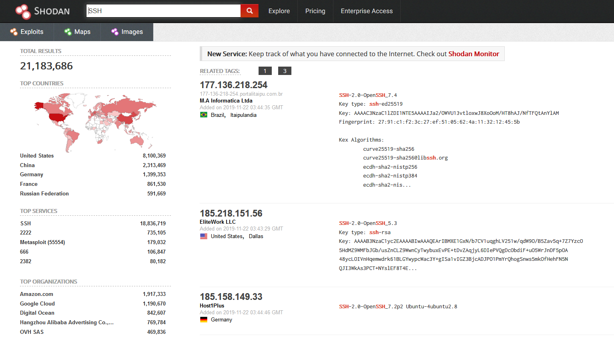
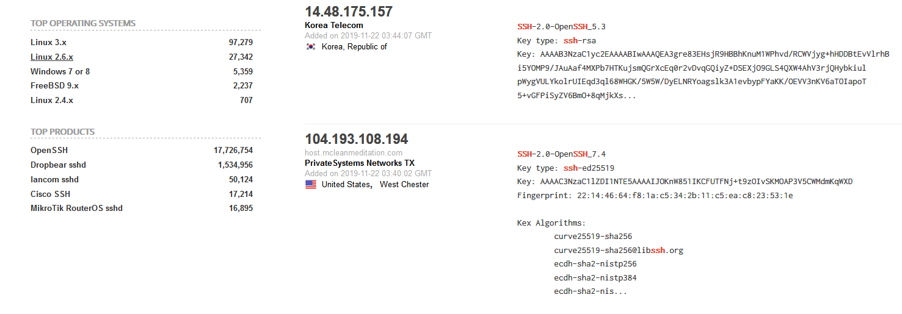
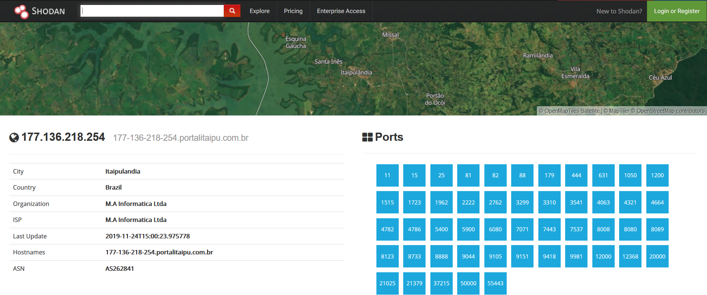
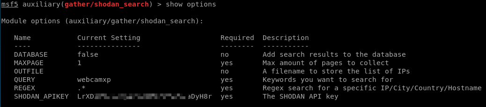
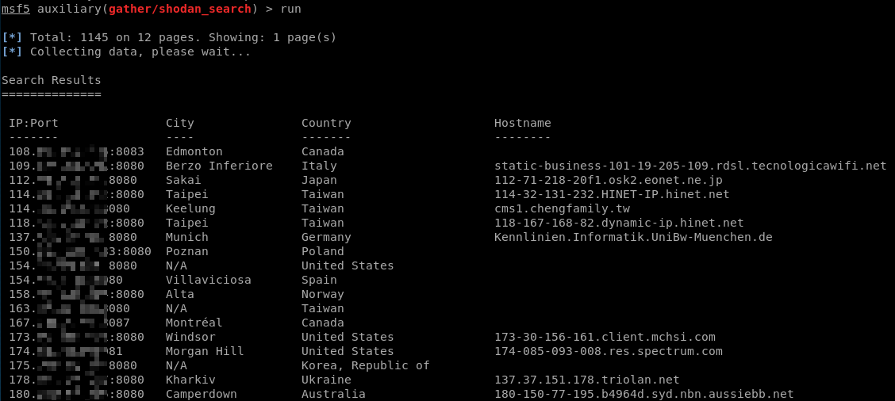
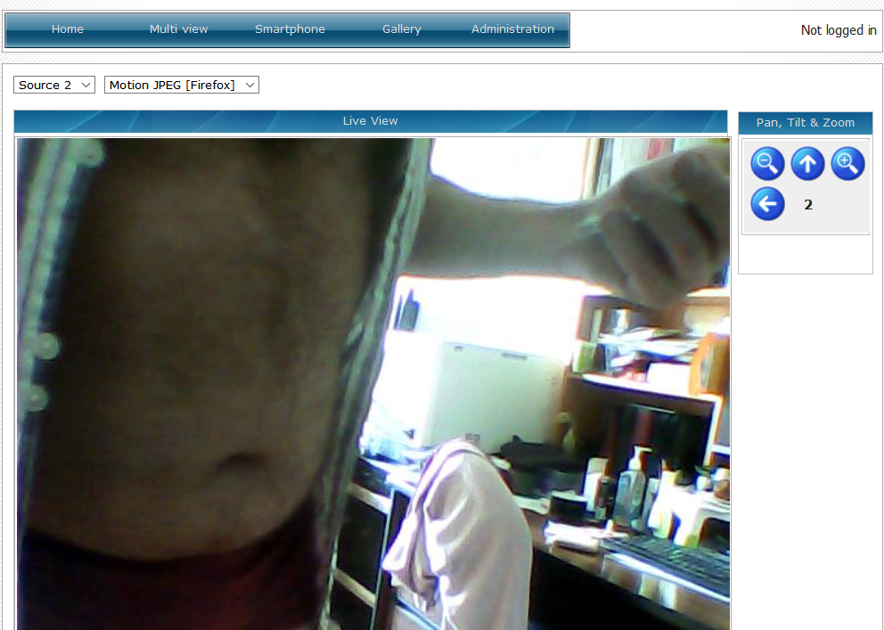
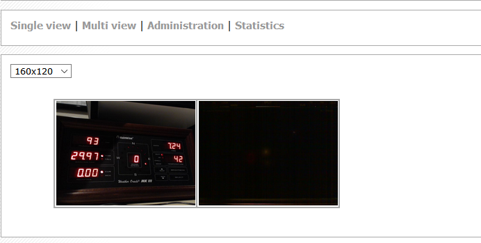
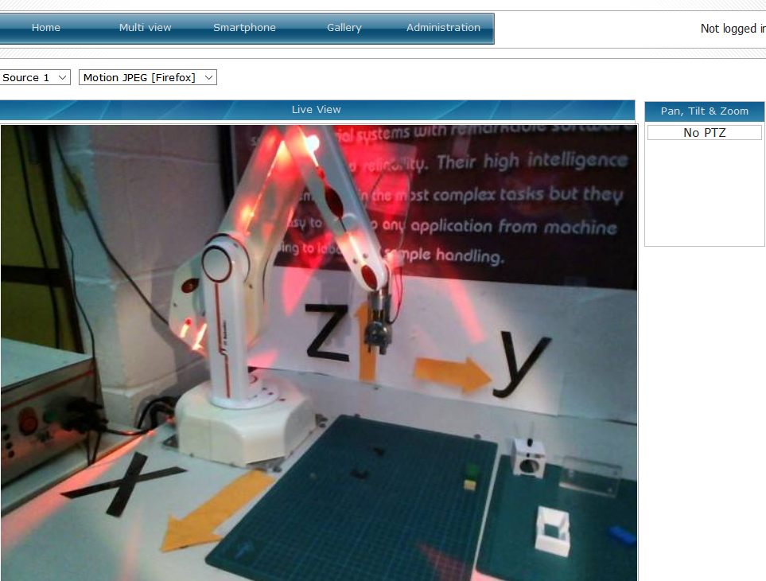
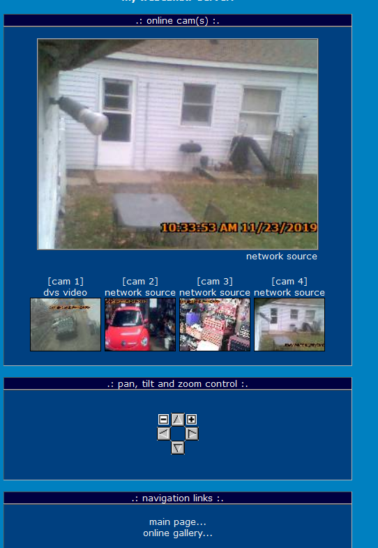

昨天Shodan十周年庆，当天购买永久会员只要1刀！
祝Shodan越做越好！
Shodan是什么
是一款特殊的搜索引擎，并不只单单针对Web中的各类html数据进行爬取。Shodan 是基于各类在线网络设备的banner进行全网搜索。
其中 Shodan 上最受欢迎的搜索内容是：webcam，linksys，cisco，netgear，SCADA等等。
我们可以利用Shodan来干什么
- 利用 0day 实施大规模批量入侵，前提是不要把自己的0day撞到别人的蜜罐里面去了,否则就可惜了
- 全网批量统计所有感染有某一数据特征的后门，可以专门用来检测某种定向攻击
- 批量扫描各种中间件的高危错误配置及能被远程利用的各类已知漏洞，也就是说完全可以把它当成一个高级的漏洞扫描器来用
- 批量探测各种弱口令
- 批量抓各种shell [ 不仅限于webshell，backdoor]等等……
Shodan 语法
1 | city： 城市，只支持英文，而且不是能是简称。如TOKYO,Hong Kong,Seoul... |
Shodan官网界面介绍
比如我搜索“SSH”：


左侧是大量的汇总数据包括：1
2
3
4
5Results map – 搜索结果展示地图
Top services (Ports) – 使用最多的服务/端口
Top organizations (ISPs) – 使用最多的组织/ISP
Top operating systems – 使用最多的操作系统
Top products (Software name) – 使用最多的产品/软件名称
中间的主页面我们可以看到包含如下的搜索结果：1
2
3
4
5
6IP 地址
主机名
ISP
该条目的收录收录时间
该主机位于的国家
Banner 信息
想要了解每个条目的具体信息，只需要点击每个IP。此时，URL 会变成这种格式https://www.shodan.io/host/[IP]，所以我们也可以通过直接访问指定的 IP 来查看详细信息。

上图中我们可以从顶部在地图中看到主机的物理地址，从左侧了解到主机的相关信息，右侧则包含目标主机的端口列表及其详细信息。
一些简单的搜索实例
搜集某个城市的特定设备 [这里暂以不同类型的web服务器为例] 标识 [自己可以事先多收集一些常见的软件和设备标识]:1
2
3
4
5
6
7
8Microsoft-IIS/5.0 city:"TOKYO" 可逐个尝试能否直接写shell
Microsoft-IIS/6.0 city:"Seoul" 可逐个尝试能否直接 RCE
Microsoft-IIS/7.5 city:"Hong Kong"
apache city:"Nagoya"
Apache/2.2.27 city:"Nagoya"
Tomcat city:"Seoul" 可逐个尝试能否直接 RCE
cisco city:"Osaka"
tplink city:"nanjing"
搜索特定版本的操作系统及端口:1
2
3
4
5os:"linux" net:"72.34.62.0/24"
os:"windows" net:"195.40.91.0/24"
Apache city:"Hong Kong" port:"8080" product:"Apache Tomcat/Coyote JSP engine"
Apache city:"Seoul" port:"8080"
hostname:".polyu.edu.hk" os:"windows"
搜索指定国家地域特定类型的工具服务 (还是那句话,多搜集一些高质量的工具banner):1
2
3
4
5product:"tomcat" net:"158.132.18.0/24"
product:"apache" net:"158.132.18.0/24"
product:"iis" net:"158.132.18.0/24"
port:"8080" jboss country:CN
port:"8080" jboss country:IN
扫描指定网段内的所有特定数据库服务器:1
2
3
4
5product:"Mysql" net:"140.117.13.0/24" port:"3306"
port:"1433" net:"78.131.197.0/24"
port:"5432" net:"77.55.149.0/24"
port:"1521" net:"78.143.192.0/12"
port:"1521" city:"Osaka"
搜索特定远程管理终端端口:1
2
3
4os:"windows" port:"3389" net:"107.160.1.0/24"
os:"linux" port:"22" net:"107.160.1.0/24"
os:"linux" port:"23" net:"107.160.1.0/24"
os:"linux" port:"23" net:"87.124.0.0/15"
搜索ftp / tftp :1
2port:"21" net:"107.160.1.0/24"
port:"69" net:"218.242.16.0/24"
在某个城市中搜索指定的端口,操作系统及在线网络设备:1
2
3
4
5
6
7
8
9city:"Hong Kong" port:"69"
city:"Hong Kong" port:"3389"
city:"Hong Kong" port:"22"
city:"Hong Kong" port:"23"
city:"Hong Kong" port:"3306"
city:"Hong Kong" port:"110"
city:"Hong Kong" os:"windows"
city:"Hong Kong" product:"cisco"
city:"Hong Kong" port:"8080"
搜索指定国家的特定设备,端口,服务器:1
2
3
4
5
6
7
8
9
10port:"23" country:CN
port:"1433" country:CN
port:"3389" country:CN
tplink country:CN
huawei country:CN
netcam country:CN
country:CN net:"115.225.113.0/24" port:"22"
country:CN router
admin login country:HK
hacked by country:HK
搜缺省密码:1
2"default password" city:"Hong Kong"
country:CN "default password"
搜索各类漏洞摄像头:1
netcam net:"187.189.82.0/24"
常见设备的默认用户名密码，可以尝试撞撞运气
1 | ACTi: admin/123456 or Admin/123456 |
别人的一点小结
- https://www.zoomeye.org/ 知道创宇的钟馗之眼，基于shodan实现
- 完全手工的话,确实挺累的,为什么不写成自动化的脚本来帮我们完成呢。很多现成的优秀脚本是我们学习的来源
- 在写脚本之前,自己首先要能熟练使用才是,这样写出来的工具杀伤力才能更大些
- 用这些搜索引擎的时候,最好全程挂上vpn,推荐美国的,原因大家应该都明白,自家人对自家人的限制几乎是最少的
利用MSF+Shadon搜索网络摄像头
看到一个好玩的，玩一下。
MSF我一直很喜欢~
auxiliary/gather/shodan_search模块：

SHODAN_APIKEY从官网看；QUERY查询的设备为webcamxp
运行：

随便点几个看看：

大叔肚子有点大啊。。

貌似监控某个设备

实验室的设备？？

嘿嘿，居住区了
参考链接
https://www.iyunv.com/thread-392144-1-1.html


评论加载中